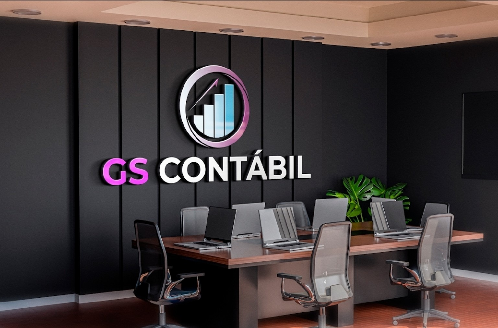

Abertura, alteração e encerramento
Suporte para formalização, atualização cadastral e encerramento de empresas, incluindo MEI, ME, EPP e LTDA.
Saiba mais sobre abertura, alteração e encerramentoAssessoria contábil para empresas e empreendedores que buscam organização, estratégia e tranquilidade para cuidar do negócio. Da abertura às rotinas fiscais, contábeis e trabalhistas, conte com apoio especializado.

Uma comunicação clara para compreender necessidades e orientar cada etapa com atenção.
Informações contábeis ajudam a acompanhar obrigações e pensar nos próximos passos com mais confiança.
Cuidado com as informações e atenção às particularidades de cada pessoa ou negócio.
Uma assessoria contábil eficiente vai além das obrigações: ajuda a manter a empresa organizada, acompanhar indicadores e tomar decisões com mais segurança.
A GS Contábil oferece assessoria contábil com foco em organização, planejamento e suporte às necessidades da empresa.
Informação organizada para compreender melhor as obrigações e a rotina contábil.
Orientação fiscal para avaliar responsabilidades e possibilidades conforme cada caso.
Comunicação próxima para apoiar decisões com mais clareza e segurança.
Soluções para formalizar, organizar e desenvolver sua empresa, com atenção às rotinas contábeis, fiscais, trabalhistas e financeiras.
Suporte para formalização, atualização cadastral e encerramento de empresas, incluindo MEI, ME, EPP e LTDA.
Saiba mais sobre abertura, alteração e encerramentoOrientação para declaração de pessoa física e jurídica, com organização das informações e documentos necessários.
Saiba mais sobre Imposto de RendaApoio às rotinas trabalhistas e às obrigações relacionadas aos colaboradores da empresa.
Saiba mais sobre departamento pessoalAcompanhamento contábil e fiscal para manter as informações e obrigações da empresa organizadas.
Saiba mais sobre contabilidade fiscal e completaOrientação para emissão e renovação de certificados digitais para pessoa física e jurídica.
Saiba mais sobre certificado digitalAnálises e relatórios para apoiar o acompanhamento dos resultados e o planejamento da empresa.
Saiba mais sobre planejamento e relatórios gerenciaisCompreender as obrigações fiscais e o enquadramento tributário faz parte de uma gestão mais organizada e responsável.
Cada atividade possui características próprias. Por isso, uma análise individual ajuda a esclarecer responsabilidades e avaliar alternativas previstas na legislação.
Converse com a GS Contábil para entender quais informações e documentos são importantes para avaliar sua situação.
Não espere as mudanças acontecerem para avaliar os impactos no seu negócio.
Conversar sobre planejamentoExplicações acessíveis para ajudar você a compreender documentos, obrigações e procedimentos.
A conversa começa pelas necessidades e particularidades de cada cliente.
Informações contábeis podem ajudar a enxergar responsabilidades, prazos e pontos de atenção.
Cuidado com as informações e atenção às regras aplicáveis a cada situação.
Apoiamos empresas, MEIs, profissionais e empreendedores com soluções contábeis alinhadas às necessidades de cada atividade.
Orientação para compreender obrigações fiscais e organizar informações relacionadas à atividade profissional.
Saiba mais para prestadores de serviçosApoio para esclarecer dúvidas contábeis e organizar documentos e declarações, conforme a necessidade.
Saiba mais para pessoas físicasInformações sobre formalização, rotina de obrigações e organização de documentos do negócio.
Saiba mais para MEIs e empreendedoresOrientação para acompanhar responsabilidades fiscais e contábeis ligadas à operação.
Saiba mais para comércio e pequenos negóciosApoio para compreender a organização fiscal e as obrigações relacionadas à atividade profissional.
Saiba mais para profissionais liberaisA GS Contábil – Assessoria oferece suporte contábil para empresas e empreendedores, com foco na organização das rotinas e no crescimento sustentável.
Cada pessoa e cada empresa possui uma realidade própria. Por isso, é importante compreender o contexto antes de orientar sobre documentos, responsabilidades e próximos passos.
O objetivo é tornar a informação contábil mais acessível e útil para apoiar a organização e decisões mais conscientes.
Conte brevemente qual é sua necessidade ou dúvida contábil.
O primeiro diálogo ajuda a identificar quais informações são importantes para avaliar seu caso.
Você recebe esclarecimentos sobre as possibilidades de atendimento adequadas à sua necessidade.
Conteúdos educativos para entender obrigações contábeis, organizar sua rotina e tomar decisões mais conscientes.

Veja como reunir informes, comprovantes e informações patrimoniais para se preparar para a declaração.
Conheça os principais cuidados com pagamentos, registros, notas fiscais e declaração anual.
Entenda quais informações ajudam a comparar opções legais e adequadas à realidade do negócio.
Se precisar esclarecer uma dúvida específica, entre em contato pelo WhatsApp.
Enviar minha dúvidaConte qual é a sua necessidade e converse com a GS Contábil para entender possibilidades de orientação contábil alinhadas ao seu contexto.
O mapa interativo é carregado apenas quando você pedir.